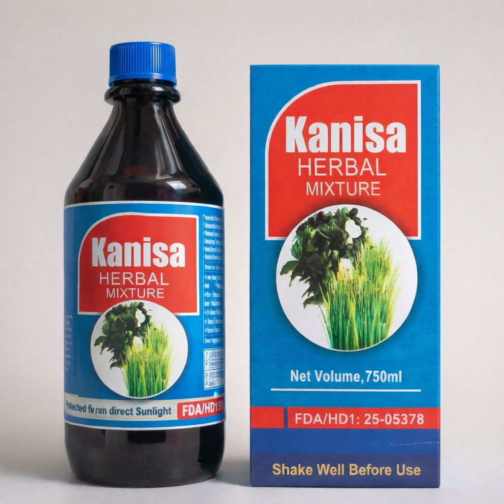

Our herbal Remedy
Kanisa Herbal mixture

Traditionally used to help manage waist pains. Produced in Ghana using carefully selected natural herbs.
Ingredients
- Cassia alata
- Rauwolfia vomitoria
- Khaya senegalensis
- Phyllanthus niruri
Dossage
Adults(18 years and above): 20mls, three times daily after meals for seven days.
Children (12-17 years):15mls, three times daily after meals for seven days.
Shake well before use